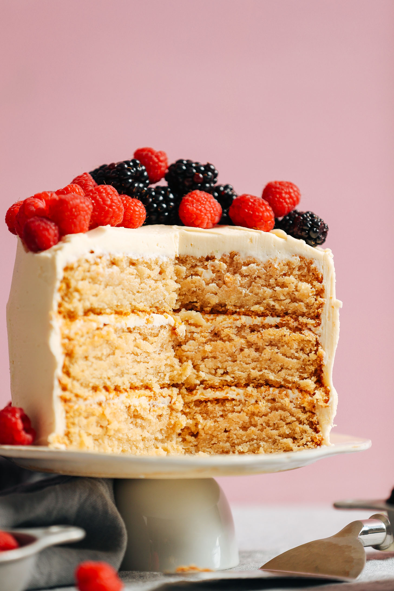

Principal page
Vegan Vanilla Cake

Ingredients
- Purpose Flour or glutten free 1-to-1 Baking flour
- sugar
- Vegan butter or Coconut Oil
- Unsweetened Applesauce
- Vegan Buttermilk (made from scratch)
- Vanilla Extract
- Leavening agents: this is just your average baking soda and baking powder!
Instructions
- Whisk together dry ingredients: This is your flour, baking soda, and baking powder. Then set aside. (NOT The Sugar)
- Cream together the vegan butter and sugar: Your vegan butter should be lighter in color than when you started. This is a good sign that the sugar has emulsified into the butter and created air pockets that help the cake to rise. Then we’ll add in the remaining wet ingredients and making everything together.
- Once the wet ingredients are combined, add in the flour in increments: You’ll alternate between the vegan buttermilk and flour mixture, mixing gently or on low-medium speed until just combined.
- Pour the cake batter into your prepared cake pans and bake! You can use 8″ round cake pans, 6″ cake pans, or even do a 7″ if you have it 🙂 Bake until a toothpick comes out clean or by using the bounce back test.
Nutrition
I feel like this is such an underrated trick, and I talk about it a bit in my Vegan Baking 101 guide. I also now have an entire guide on how to make vegan buttermilk that will help you choose which dairy free milk to use!
If you’ve ever had a normal vanilla cake, then you’ll know that incredibly sweet yet ever so subtle tang that comes along with a fluffy and moist cake. That’s from the buttermilk. It also helps to give rise to the cake without drying it out.
So since buttermilk isn’t vegan, we’ll have to make our own- but don’t worry it’s so simple!
All you’ll need to do is combine your chosen dairy free milk with a little apple cider vinegar. Let the mixture sit for 5-7 minutes so that it can slightly curdle. Then use it in your recipe as you would regular buttermilk!
Enjoy the cake!